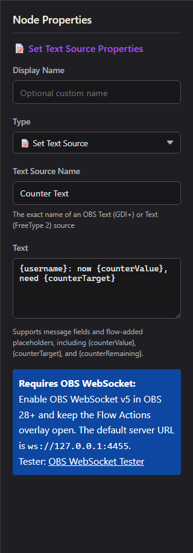

1. Flow Actions mit OBS verbinden
OBS WebSocket v5 ist in OBS 28 und neuer integriert. Social Stream Ninja verwendet es für vollständige OBS-Steuerung und Medienereignisse.
- Öffne in OBS Werkzeuge → WebSocket-Servereinstellungen.
- Aktiviere den WebSocket-Server. Behalte den Standardport
4455; lege bei Bedarf ein Passwort fest. - Öffne in Social Stream Ninja den Flow Actions Bereich und lege die OBS-WebSocket-URL und optional ein Passwort fest.
- Kopiere die Flow-Actions-URL und lasse sie geöffnet. Für Overlay-/Audioaktionen wird eine OBS-Browser-Quelle empfohlen.
- Verwende: OBS-WebSocket-Tester um die Verbindung vor dem Erstellen eines Flows zu prüfen.
https://socialstream.ninja/actions.html?session=YOUR_SESSION&obsws=ws://127.0.0.1:4455Hinzufügen
&obspw=YOUR_PASSWORD nur, wenn OBS Authentifizierung verlangt. Füge &obsdebug=1 hinzu, um bei der Fehlersuche ein kleines Verbindungsstatus-Abzeichen anzuzeigen.
Zwei OBS-Verbindungsmodi
| Modus | Was unterstützt wird | Voraussetzung |
|---|---|---|
| OBS WebSocket v5 | Alle Auslöser und Aktionen dieser Anleitung. | OBS 28+, WebSocket-Server aktiviert, Flow-Actions-Seite geöffnet. |
| OBS-Browser-Quell-API | Ausweichlösung für Szenenwechsel, Streaming starten/stoppen, Aufnahme starten/stoppen und Wiederholungspuffer speichern. | Flow Actions innerhalb von OBS mit erweiterter Zugriffsstufe geladen. Funktionen für Quellen, Filter, Text, Lautstärke, Medien, Aktualisieren und Medienende benötigen weiterhin WebSocket. |
2. OBS-Knoten zu einem Flow hinzufügen
- Öffne Event-Flow-Editor und erstelle oder bearbeite einen Flow.
- Ziehe einen Auslöser auf die Arbeitsfläche.
- Öffne den Abschnitt OBS Studio in der Aktionsliste und ziehe die benötigte OBS-Aktion hinein.
- Verbinde den Auslöser mit der Aktion, konfiguriere die exakten OBS-Szenen-/Quellnamen, speichere und aktiviere den Flow.

3. OBS-Auslöser
Sie starten einen Flow, wenn OBS ein passendes Ereignis meldet. Sie kommen als type: "obs"; OBS-spezifische Details stehen unter meta.
| Auslöser | Wann ausgelöst wird | Nützliche Daten |
|---|---|---|
| OBS-Stream gestartet | Streaming erreicht den gestarteten Zustand. | meta.outputState, meta.outputActive |
| OBS-Stream gestoppt | Streaming erreicht den gestoppten Zustand. | meta.outputState, meta.outputActive |
| OBS-Aufnahme gestartet | Aufnahme beginnt. | meta.outputState |
| OBS-Aufnahme gestoppt | Aufnahme endet. | meta.outputState |
| OBS-Szene gewechselt | Die aktive Programmszene ändert sich. | meta.sceneName |
| OBS-Medium beendet WebSocket | Eine Medienquelle beendet die Wiedergabe. Optional nach exaktem Namen der Medienquelle filtern. | meta.inputName, meta.inputUuid |
| OBS-Wiederholungspuffer gespeichert | OBS schließt das Speichern einer Wiederholung ab. | meta.savedReplayPath |
4. OBS-Aktionen
| Aktion | Konfiguration und Verhalten | Verbindung |
|---|---|---|
| Szene wechseln | Wechselt die aktive Programmszene anhand des exakten Szenennamens. | WebSocket oder Browser-Quell-API als Ausweichlösung |
| Quelle umschalten | Zeigt ein Szenenelement, blendet es aus oder schaltet es um. Szene und Gruppe sind optionale Zielfelder. | WebSocket |
| Textquelle setzen | Aktualisiert Text (GDI+) oder Text (FreeType 2) mit Vorlagenplatzhaltern. | WebSocket |
| Medienquelle steuern | Abspielen/fortsetzen, pausieren, neu starten, stoppen, nächste oder vorherige. | WebSocket |
| Quelllautstärke setzen | Setzt eine Eingabe von -100 auf +26 dB. | WebSocket |
| Browser-Quelle aktualisieren | Lädt eine Browser-Quelle ohne Cache neu. | WebSocket |
| Filter umschalten | Aktiviere, deaktiviere oder schalte einen benannten Quellfilter um. | WebSocket |
| Audio stummschalten/aktivieren | Schalte eine Eingabe stumm, hebe die Stummschaltung auf oder schalte sie um. | WebSocket |
| Aufnahme starten | Startet die OBS-Aufnahme. | WebSocket oder Browser-Quell-API als Ausweichlösung |
| Aufnahme stoppen | Stoppt die OBS-Aufnahme. | WebSocket oder Browser-Quell-API als Ausweichlösung |
| Streaming starten | Startet die konfigurierte OBS-Stream-Ausgabe. | WebSocket oder Browser-Quell-API als Ausweichlösung |
| Streaming stoppen | Stoppt die OBS-Stream-Ausgabe. | WebSocket oder Browser-Quell-API als Ausweichlösung |
| Wiederholungspuffer steuern | Startet, stoppt oder schaltet den Wiederholungspuffer um. | WebSocket |
| Wiederholungspuffer speichern | Speichert den aktuell laufenden Wiederholungspuffer. | WebSocket oder Browser-Quell-API als Ausweichlösung |
Textquelle setzen und Flow-Variablen
Das Textfeld unterstützt normale Nachrichtenplatzhalter wie {username}, {message}, {source}, und {donation}, sowie Werte aus vorherigen Flow-Knoten, etwa {counterValue}, {counterTarget}, und {counterRemaining}.
{username}: now {counterValue}, need {counterTarget}
Medienquellensteuerungen
Abspielen / Pause
Abspielen setzt pausierte Medien fort. Pause hält ihre aktuelle Position.
Neu starten / Stoppen
Neu starten beginnt von vorn. Stoppen beendet die Wiedergabe und setzt die Eingabe zurück.
Nächste / Vorherige
Wechselt durch Quellen mit Wiedergabelisten, etwa VLC Video Source. Eine Medienquelle mit nur einer Datei ignoriert diese Aktionen möglicherweise.
Lautstärke, Stummschaltung und Filter
Quelllautstärke setzen verwendet dB, passend zur OBS-Mixerskala: 0 dB bedeutet unveränderte Verstärkung, negative Werte sind leiser und -100 dB ist praktisch lautlos. Stummschaltung ist ein separater Zustand. Toggle Filter ändert nur den Aktivierungszustand eines vorhandenen Filters; Filtereinstellungen werden nicht bearbeitet.
Wiederholungspuffer
Aktiviere zuerst den Wiederholungspuffer unter OBS-Einstellungen → Ausgabe. Verwende Wiederholungspuffer steuern zum Starten/Stoppen und dann Wiederholungspuffer speichern zum Speichern des zuletzt gepufferten Abschnitts auf die Festplatte.
5. Nützliche Rezepte
Stündliche Nachricht, während OBS live ist
Wähle im Event-Flow-Editor Mit Vorlage beginnen → Fortgeschritten → Stündliche Nachricht, während OBS live ist. Er startet deaktiviert und enthält drei Zweige in einem Flow:
- OBS-Stream gestartet → Gate-Zustand setzen: AN
- Zeitintervall (3600 Sekunden) → EIN/AUS-Schalter → Nachricht senden
- OBS-Stream gestoppt → Gate-Zustand setzen: AUS
Beide Set-Gate-State-Aktionen verweisen bereits auf denselben Schalter, dessen Standard AUS ist. Bearbeite Nachricht senden zum Auswählen von Chatplattform (das Beispiel verwendet Twitch) und Nachricht. Wähle eine Plattform oder All Platforms; Reply to Source kann nicht auf ein OBS-Ereignis oder einen Timer-Takt antworten.
Flow Actions mit OBS verbinden, halte Social Stream und den Zielchat verbunden, speichere und aktiviere dann den Flow vor dem Start deines Streams. Der Schalter wartet auf ein OBS-Startereignis; das Laden während eines laufenden Streams schaltet ihn nicht AN. Ein Neustart von Social Stream setzt ihn ebenfalls auf AUS zurück.
Zeitverhalten: das Intervall folgt einem eigenen Zeitplan; die erste Erinnerung kann daher früher als eine Stunde nach dem Stream-Start kommen. Spätere Erinnerungen wiederholen sich stündlich, solange der Schalter AN ist. Ändere für eine andere Häufigkeit den Time-Interval-Wert; er wird in Sekunden angegeben.
Zählertext in OBS
Platziere Textquelle setzen nach dem Zähler-/Prüfpfad und verwende:
{username}: now {counterValue}, need {counterTarget}
Nach einem Video etwas ausführen
OBS-Medium beendet (filtern auf Intro Video) → Szene wechseln auf Main.
Medienneustart per Chat
Nachricht ist gleich !replayintro → Berechtigungsbedingung → Medienquelle steuern: Neu starten.
Benachrichtigungsseite aktualisieren
Nachricht ist gleich !refreshalerts → Moderatorbedingung → Browser-Quelle aktualisieren.
Musik für eine Benachrichtigung absenken
Quelllautstärke setzen auf -24 dB → Benachrichtigungsaktion → Verzögerung → wiederherstellen auf 0 dB.
Wiederholungsablauf
OBS-Stream gestartet → Wiederholungspuffer steuern: Starten; ein separater vertrauenswürdiger Befehl führt Wiederholungspuffer speichern.
6. Weitere integrierte OBS-Steuerungen
Social Stream Ninja hat außerdem ältere OBS-Browser-Quell-Steuerungen im Streaming-Chat-Dock. Sie verwenden nicht die Flow-Actions-WebSocket-Brücke.
| Option | Was es macht | Voraussetzung |
|---|---|---|
| Anzeige der aktuellen OBS-Szene | Zeigt die aktive Szene im Streaming-Chat-Dock. | Dock innerhalb von OBS mit Leseberechtigung geladen. |
| Gäste können !cycle verwenden | Wechselt zur nächsten OBS-Szene, begrenzt auf einmal pro 10 Sekunden. | Aktiviere die Popup-Option; Dock innerhalb von OBS mit erweitertem Zugriff geladen. |
| Berechtigte Nutzer können !start / !stop verwenden | Startet oder stoppt Streaming durch vertrauenswürdige Chatnutzer. | Aktiviere die Popup-Option; Dock innerhalb von OBS mit voller/erweiterter Steuerungsberechtigung geladen. |
| OBS-Fernsteuerungsfeld | Zeigt Szenen an und kann Szenen wechseln oder Streaming/Aufnahme umschalten, wenn das Ziel-OBS-Dock die erforderliche Steuerungsstufe erlaubt. | Streaming-Chat-Dock mit einem innerhalb von OBS laufenden Dock gekoppelt. |
| OBS-WebSocket-Tester | Prüft Version, Verbindung, Szenen und einzelne Anfragen vor der Verwendung von Event Flow. | Tester öffnen |
7. Fehlerbehebung
| Problem | Prüfe |
|---|---|
| Nichts passiert | Der Flow ist gespeichert und aktiviert; Flow Actions ist geöffnet; beide verwenden dieselbe Sitzungs-ID. |
| OBS verbindet sich nicht | WebSocket-Server ist aktiviert, die URL lautet ws://127.0.0.1:4455, und das Passwort stimmt überein. Port 4444 ist der veraltete v4-Standard. |
| Szene/Quelle/Filter nicht gefunden | Kopiere den exakten OBS-Namen. Gib für die Sichtbarkeit Szene oder Gruppe an, wenn das Element verschachtelt ist oder außerhalb der aktuellen Szene liegt. |
| Text ändert sich nicht | Verwende Text (GDI+) oder Text (FreeType 2), prüfe den Eingabenamen und deaktiviere Aus Datei lesen. |
| Media Ended wird nie ausgelöst | Verwende OBS WebSocket v5 und eine echte Medienquelle. Medien in Endlosschleife erreichen keinen Endzustand. |
| Nächste/Vorherige bewirkt nichts | Verwende eine Quelle mit Wiedergabeliste, etwa VLC Video Source. |
| Speichern der Wiederholung schlägt fehl | Aktiviere den Wiederholungspuffer in den OBS-Ausgabeeinstellungen und starte ihn vor dem Speichern. |
| Aktionen stoppen bei Szenenwechsel | Deaktivieren Quelle herunterfahren, wenn nicht sichtbar bei der Flow-Actions-Browser-Quelle oder lasse die Seite anderswo geöffnet. |
GetVersion → Szenen/Eingaben prüfen → einzelne Anfrage testen → vollständigen Event Flow testen.